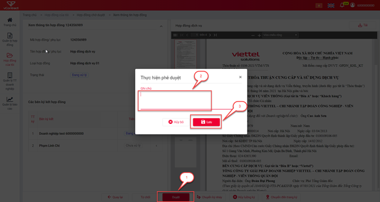
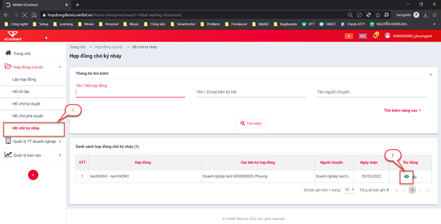
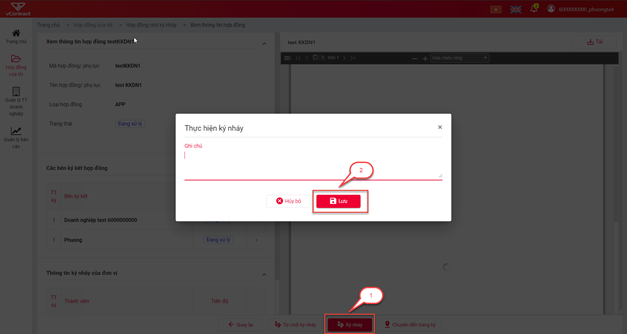
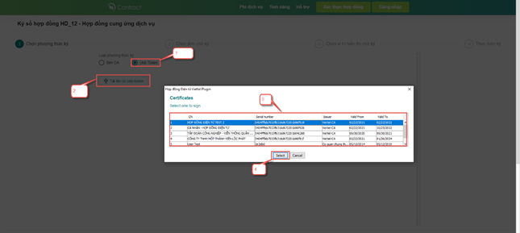
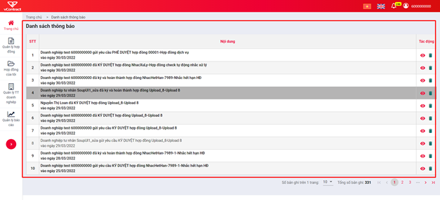

Chức năng hợp đồng
Hợp đồng công ty lập
Mục đích: Dùng cho doanh nghiệp mua dịch vụ hợp đồng điện tử của viettel, người dùng có quyền quản lý tài liệu sẽ được quyền quản lý menu này.
Tìm kiếm hợp đồng công ty lập
- B1 : Quản lý hợp đồng >> HĐ công ty lập
- B2 : Nhập các tiêu chí tìm kiếm và chọn Tìm kiếm
- Các tiêu chí tìm kiếm nâng cao gồm :
- Tên/Mã hợp đồng
- Tên/Email bên ký kết
- Trạng thái : Tất cả, Nháp, Đang xử lý, Đã từ chối, Hoàn thành, Đã hủy.
- Tên người lập/chi nhánh lập
- Loại hợp đồng
- Ngày lập (từ)
- Ngày lập (đến)
- Các tiêu chí tìm kiếm cơ bản gồm :
- Tên/Mã hợp đồng
- Bên ký kết/Người lập
- Trạng thái : Tất cả, Nháp, Đang xử lý, Đã từ chối, Hoàn thành, Đã hủy.

Xem chi tiết hợp đồng
Mục đích: Cho phép người dùng xem chi tiết thông tin hợp đồng
- B1: Vào menu “Quản lý hợp đồng” >> HĐ công ty lập
- B2: Nhấn vào nút Xem chi tiết

Tải hợp đồng
Mục đích: Cho phép người dùng tải hợp đồng về lưu.
- B1: Vào menu “Quản lý hợp đồng” >> Chọn HĐ công ty lập
- B2: Nhấn vào nút Tải

Sao chép hợp đồng mẫu
Mục đích: Cho phép người dùng sao chép hợp đồng để thực hiện lập hợp đồng mới nhanh hơn.
- B1: Vào menu “Quản lý hợp đồng” >> HĐ công ty lập**
- B2: Nhấn vào nút "Sao chép”

Hợp đồng nhận từ đối tác
Tìm kiếm hợp đồng nhận từ đối tác
- B1 : Quản lý hợp đồng >> HĐ công ty lập
- B2 : Nhập các tiêu chí tìm kiếm và chọn Tìm kiếm
- Các tiêu chí tìm kiếm nâng cao gồm :
- Tên/Mã hợp đồng
- Tên/Email bên ký kết
- Trạng thái : Tất cả, Đang xử lý, Đã từ chối, Hoàn thành.
- Tiến độ: Tất cả, Chờ thiết lập luồng ký, Đang xử lý, Từ chối, Đã húy duyệt, Dừng xử lý.
- Tên bên lập hợp đồng
- Ngày nhận (từ)
- Ngày nhận (đến)
- Các tiêu chí tìm kiếm cơ bản gồm :
- Tên/Mã hợp đồng
- Tên/Email bên ký kết
- Trạng thái : Tất cả, Đang xử lý, Đã từ chối, Hoàn thành.

Xem chi tiết hợp đồng
Mục đích: Cho phép người dùng xem chi tiết thông tin hợp đồng
- B1: Vào menu “Quản lý hợp đồng” >> Chọn HĐ nhận từ đối tác
- B2: Nhấn vào nút Xem chi tiết

Tải hợp đồng
Mục đích: Cho phép người dùng tải hợp đồng về lưu.
- B1: Vào menu “Quản lý hợp đồng” >> HĐ nhận từ đối tác
- B2: Nhấn nút Tải

Chỉnh sửa hợp đồng
Lưu ý: chỉ áp dụng cho hợp đồng Nháp
- B1: Đăng nhập vào tài khoản người dùng lập hợp đồng >> Hợp đồng của tôi >> HĐ tôi lập >> Chọn hợp đồng đang ở trạng thái Nháp >> click icon Sửa:

- B2 : sửa những thông tin cần thiết và nhấn nút Lưu để lưu cập nhật

Xóa hợp đồng
Lưu ý: chức năng này chỉ sử dụng cho người dùng tạo ra chính hơp đồng đó và hợp đồng đang ở trạng Thái Nháp.
- B1: Đăng nhập vào tài khoản người dùng bất ký bên doanh nghiệp lập hợp đồng >> Hợp đồng của tôi >> HĐ tôi lập
- B2: Tìm bản ghi hợp đồng đang ở Trạng thái “Nháp” >> click icon “Xóa” >> Nhấn đồng ý trên popup xác nhận để xóa hợp đồng.

Thiết lập luồng ký
-
Lưu ý: chức năng này chỉ áp dụng cho khách hàng tổ chức có mua dịch vụ hợp đồng điện tử của Viettel (tức là khách hàng này vừa là doanh nghiệp mua dịch vụ hợp đồng điện tử của Viettel vừa là khách hàng của doanh nghiệp khác có mua dịch vụ hợp đồng điện tử của Viettel).
-
Mục đích: Cho phép khách hàng thiết lập luồng ký nội bộ của doanh nghiệp mình xử lý hợp đồng khi nhận được hợp đồng từ đối tác chuyển đến.
-
Các bước thực hiện:
B1: Đăng nhập vào tài khoản của khách hàng doanh nghiệp >> Quản lý hợp đồng >> HĐ nhận từ đối tác >> Nhấn nút “Xem chi tiết”:

B2: Tại group “Thiết lập luồng duyệt- ký nội bộ” >> gõ tên/ email của người dùng thuộc doanh nghiệp muốn đưa vào danh sách luồng ký duyệt >> nhấn “Lưu” để lưu lại luồng xử lý cho hợp đồng >> hệ thống sẽ tự động chuyển yêu cầu xử lý đến từng người dùng được thiết lập trong luồng theo trình tự của cột “TT”:

Duyệt hợp đồng
-
Mục đích: sử dụng cho người dùng đang có yêu cầu cần duyệt hợp đồng được chuyển đến.
-
Các bước thực hiện:
B1: Đăng nhập vào tài khoản người dùng có yêu cầu cần duyệt hợp đồng >> Hợp đồng của tôi >> HĐ chờ phê duyệt >> xem chi tiết lại hợp đồng.

B2: Duyệt >> Nhập lý do duyệt (nếu có) >> Lưu

B3: Hệ thống thông báo “Phê duyệt thành công” để hoàn thành bước phê duyệt.
Ký nháy hợp đồng
B1: Đăng nhập vào tài khoản của người dùng đang có yêu cầu chờ Ký duyệt hoặc Phê duyệt hợp đồng >> Hợp đồng của tôi >> Click vào một trong 2 menu “HĐ chờ ký duyệt” hoặc “HĐ chờ phê duyệt” >> Xem chi tiết hợp đồng >> Chuyển ký nháy >> Chọn người cần chuyển ký nháy >> Nhấn “xác nhận”:

B2: Đăng nhập vào tài khoản của người dùng có yêu cầu ký nháy hợp đồng >> Hợp đồng của tôi >> HĐ chờ ký nháy >> Click “Xem chi tiết:

B3: Ký nháy >> Nhập nội dung ký nháy (nếu có) >> Nhấn “Lưu”

Từ chối duyệt hợp đồng
- B1: Đăng nhập vào tài khoản người dùng đang có yêu cầu cần Duyệt hợp đồng >> Hợp đồng của tôi >> HĐ chờ phê duyệt >> Xem chi tiết:

- B2: Click “Từ chối” >> Nhập lý do từ chối >> Nhấn “Lưu” để hoàn tất thao tác:

- Sau khi từ chối phê duyệt thành công, hợp đồng sẽ chuyển về trạng thái “Đã từ chối” và kết thúc luồng ký:

Từ chối ký hợp đồng
- B1 : Đăng nhập vào tài khoản người dùng đang có yêu cầu cần Ký hợp đồng >> Hợp đồng của tôi >> HĐ chờ ký duyệt >> Xem chi tiết:

- B2 : Click “Từ chối” >> Nhập lý do từ chối >> Nhấn “Lưu” để hoàn tất thao tác:

- Sau khi từ chối phê duyệt thành công, hợp đồng sẽ chuyển về trạng thái “Đã từ chối” và kết thúc luồng ký:

Hủy luồng ký
- Lưu ý: Hợp đồng do người dùng nào tạo ra thì người dùng đó sẽ được thực hiện chức năng này, người dùng không tạo ra hợp đồng sẽ không được dùng chức năng này.
Các bước thực hiện:
- B1: Đăng nhập vào tài khoản người dùng bất kỳ của doanh nghiệp >> Hợp đồng của tôi >> HĐ tôi lập >> Chọn Hợp đồng đang ở trạng thái “Đang xử lý” >> Click icon “Hủy luồng ký” >> Nhấn “Đồng ý” trên form xác nhận để hoàn tất việc Hủy luồng ký.

- B2: Nhập lý do Hủy >> Lưu:

- B3: Sau khi hủy thành công, hợp đồng sẽ ở trạng thái “Đã hủy”, và dừng quá trình xử lý hợp đồng không cho người dùng thao tác ký/từ chối hợp đồng nữa:

Tải hợp đồng
- B1 : Vào 1 trong các menu “HĐ Công ty lập, HĐ nhận từ đối tác, HĐ tôi lập, HĐ chờ phê duyệt, HĐ chờ ký duyệt, HĐ chờ ký nháy” -> click icon “ tải”

- B2 : Hợp đồng được mở ở tab mới dưới dạng pdf file, chọn biểu tượng Tải để tải tài liệu về máy

Ký theo lô
- B1 : Hợp đồng của tôi >> HĐ chờ ký duyệt >> Chọn những tài liệu muốn ký -> “Ký theo lô”

- B2 : Sau khi popup xác nhận xuất hiện, nhấn nút Xác nhận

- B3 : Chọn chứng thư số và nhấn Ký
Lưu ý : Chỉ có thể sử dụng Chứng thư số HSM đối với chức năng ký theo lô


Sau khi quá trình ký kết thúc, sẽ có thông báo về số lượng hợp đồng đã ký thành công và thất bại
Ký tất cả tài liệu tìm được theo điều kiện
- B1 : Hợp đồng của tôi >> HĐ chờ ký duyệt >>“Ký tất cả”

- B2 : Sau khi popup xác nhận xuất hiện, chọn Xác nhận

Lưu ý : Chỉ có thể sử dụng Chứng thư số HSM đối với chức năng ký tất cả

Sau khi quá trình ký kết thúc, sẽ có thông báo về số lượng hợp đồng đã ký thành công và thất bại
Ký không đăng nhập
Mục đích : cho phép khách hàng truy cập vào hợp đồng để thực hiện ký mà không cần đăng nhập qua tài khoản hệ thống.
Lưu ý: chức năng ký không đăng nhập chỉ áp dụng cho khách hàng cuối của doanh nghiệp sử dụng phương thức ký số
Các bước thực hiện:
- B1: Bên doanh nghiệp lập hợp đồng thực hiện lập hợp đồng ký kết với khách hàng của doanh nghiệp mình bằng cách:
- Đăng nhập vào hệ thống hợp đồng điện tử >> Hợp đồng của tôi >> Lập hợp đồng.
- Chọn cách lập hợp đồng theo “Chọn tệp từ máy tính” hoặc “Chọn từ mẫu”
- Nhập các thông tin hợp lệ trên màn hình lập hợp đồng
- Tại group “Các bên ký kết” >> chọn khách hàng vào danh sách ký kết hợp đồng >> tại dòng dữ liệu khách hàng, tích chọn vào chekbox cột “KKĐN” để thiết lập cho phép khách hàng ký hợp đồng mà không cần đăng nhập.
- Nhấn “lập hợp đồng” để lưu lại hợp đồng ở trạng thái Nháp

- Tại màn hình “Danh sách hợp đồng của tôi” >> Chọn bản ghi hơp đồng vừa lập, nhấn vào icon “Thực hiện luồng ký” để bắt đầu luồng ký kết, chuyển hợp đồng đến khách hàng xử lý:

- B2: Sau khi bắt đầu luồng ký, hợp đồng được chuyển đến khách hàng xử lý, khách hàng sẽ nhận được email thông báo ký hợp đồng trên link ký không đăng nhập:

Trong email này có các thông tin sau:
- Đơn vị yêu cầu: Đơn vị gửi yêu cầu xử lý hợp đồng đến khách hàng
- Tên tài liệu: Mã- Tên hợp đồng cần ký kết
- Email truy cập: email truy cập hợp đồng thông qua link ký không đăng nhập
- Mật khẩu truy cập: mật khẩu truy cập hợp đồng thông qua link ký không đăng nhập
- Link liên kết: Link truy cập hợp đồng
- B3: Khách hàng click vào link liên kết gửi trong email, sẽ xuất hiện màn hình đăng nhập như sau:

- B4: Nhập email/ mật khẩu gửi trong email >> nhấn Đăng nhập để truy cập hợp đồng:

- B5: Nhấn “Ký” để thực hiện ký hợp đồng
- Ký bằng USB TOKEN: Bước 1: Trên màn hình chi tiết hợp đồng >> Nhấn “Ký” >> chọn phương thức ký “USB TOKEN” >> nhấn “Tải lên từ usb token” >> Chọn chứng thư số muốn ký trong danh sách chứng thư số được load lên popup >> Nhấn “Select” để lựa chọn:

Bước 2: Nhấn “Tiếp theo” >> thực hiện chọn ảnh chữ ký ở các tab lựa chọn:
Tab “ Ảnh đã đăng ký”: hiển thị ảnh ký mặc định do hệ thống sinh ra
Tab “ Tải ảnh mới lên”: người dùng được phép tải ảnh chữ ký mới, ảnh chữ ký này phải có dung lượng không được vượt quá 2MB.
Tab “ Vẽ chữ ký”: người dùng thực hiện dùng chuột để vẽ trực tiếp chữ ký của mình, sử dụng làm ảnh ký cho hợp đồng.
Bước 3: Nhấn “Tiếp theo” >> Click chọn vị trí hiển thị ảnh ký đã chọn ở bước trên >> Sau đó nhấn “Ký” để thực hiện ký hợp đồng >> Nhập Mã PIN usb token để thực hiện ký thành công.
- Ký bằng SIMCA: Trên màn hình chi tiết hợp đồng >> nhấn “Ký” >> chọn phương thức ký “SIMCA” >> Nhập số điện thoại chứa CA cần ký >> click “lấy danh sách CTS” >> tích chọn chứng thư số muốn ký trong danh sách chứng thư số được load lên popup >> nhấn “Tiếp theo”:

- Thực hiện chọn ảnh chữ ký ở các tab lựa chọn:
- Tab “ Ảnh đã đăng ký”: hiển thị ảnh ký mặc định do hệ thống sinh ra
- Tab “ Tải ảnh mới lên”: người dùng được phép tải ảnh chữ ký mới, ảnh chữ ký này phải có dung lượng không được vượt quá 2MB.
- Tab “ vẽ chữ ký”: người dùng thực hiện dùng chuột để vẽ trực tiếp chữ ký của mình, sử dụng làm ảnh ký cho hợp đồng.
- Nhấn “Tiếp theo” >> Click chọn vị trí hiển thị ảnh ký đã chọn ở bước trên >> Sau đó nhấn “Ký” để gửi yêu cầu ký xuống SIM CA >> Trên SIM nhận được yêu cầu ký >> Thực hiện ký hợp đồng thành công.
Từ chối ký không đăng nhập
Mục đích : cho phép khách hàng truy cập vào hợp đồng để thực hiện từ chối hợp đồng mà không cần đăng nhập qua tài khoản hệ thống.
Lưu ý: chức năng từ chối không đăng nhập chỉ áp dụng cho khách hàng cuối của doanh nghiệp sử dụng phương thức ký số
Các bước thực hiện:
- B1: Bên doanh nghiệp lập hợp đồng thực hiện lập hợp đồng ký kết với khách hàng của doanh nghiệp mình bằng cách:
- Đăng nhập vào hệ thống hợp đồng điện tử >> Hợp đồng của tôi >> Lập hợp đồng.
- Chọn cách lập hợp đồng theo “Chọn tệp từ máy tính” hoặc “Chọn từ mẫu”
- Nhập các thông tin hợp lệ trên màn hình lập hợp đồng
- Tại group “Các bên ký kết” >> chọn khách hàng vào danh sách ký kết hợp đồng >> tại dòng dữ liệu khách hàng, tích chọn vào chekbox cột “KKĐN” để thiết lập cho phép khách hàng ký hợp đồng mà không cần đăng nhập.
- Nhấn “lập hợp đồng” để lưu lại hợp đồng ở trạng thái Nháp

- Tại màn hình “Danh sách hợp đồng của tôi” >> chọn bản ghi hơp đồng vừa lập, nhấn vào icon “Thực hiện luồng ký” để bắt đầu luồng ký kết, chuyển hợp đồng đến khách hàng xử lý:

- B2: Sau khi bắt đầu luồng ký, hợp đồng được chuyển đến khách hàng xử lý, khách hàng sẽ nhận được email thông báo ký hợp đồng trên link ký không đăng nhập:

Trong email này có các thông tin sau:
- Đơn vị yêu cầu: Đơn vị gửi yêu cầu xử lý hợp đồng đến khách hàng
- Tên tài liệu: Mã- Tên hợp đồng cần ký kết
- Email truy cập: email truy cập hợp đồng thông qua link ký không đăng nhập
- Mật khẩu truy cập: mật khẩu truy cập hợp đồng thông qua link ký không đăng nhập
- Link liên kết: Link truy cập hợp đồng
- B3: Khách hàng click vào link liên kết gửi trong email, sẽ xuất hiện màn hình đăng nhập như sau:

- B4: Nhập Email/Mật khẩu gửi trong email >> Nhấn Đăng nhập để truy cập hợp đồng:

- B5: Nhấn “Từ chối” >> Nhập lý do từ chối >> Nhấn “Lưu” để thực hiện từ chối ký hợp đồng qua link ký không đăng nhập.
Quản lý thông báo
Mục đích : Được sử dụng cho hầu hết người dùng trong hệ thống vContract, với chức năng chính là thông báo về những sự kiện quan trọng diễn ra trong hệ thống liên quan trực tiếp đến người dùng mà họ có thể không muốn bỏ lỡ
- Các dạng thông báo gồm có:
- Gửi thông báo khi người lập bắt đầu luồng ký Ký tài liệu bên A và bên B
- Gửi thông báo khi hệ thống chuyển xử lý đến chủ thể ký kết tiếp theo
- Gửi thông báo khi khách hàng có mua dịch vụ thiết lập luồng ký của đơn vị
- Gửi thông báo khi hợp đồng được phê duyệt
- Gửi thông báo khi hợp đồng được ký duyệt
- Gửi thông báo khi hợp đồng được ký duyệt
- Gửi thông báo khi hợp đồng bị từ chối (phê / ký duyệt)
- Gửi thông báo khi người dùng chuyển ký nháy
- Gửi thông báo khi người dùng thực hiện ký nháy
- Gửi thông báo khi người dùng từ chối ký nháy
- Gửi thông báo khi người lập hủy luồng ký kết
Menu thông báo
- B1 : Từ trang chủ chọn vào “Icon thông báo” ở góc trên bên phải màn hình

Ghi chú : Phần danh sách chỉ hiện thị tối đa 5 thông báo mới nhất của người dùng đang đăng nhập (nếu có)
Danh sách thông báo
- B1 : Từ trang chủ, chọn vào “Icon thông báo” -> “Xem tất cả”

- B2 : Hệ thống chuyển hướng đến trang danh sách thông báo

Hiển thị chi tiết thông báo
- B1 : Từ màn hình “Danh sách thông báo” -> Chọn một thông báo bất kỳ

- B2 : Sẽ hiện thị nội dung Thông báo được click: